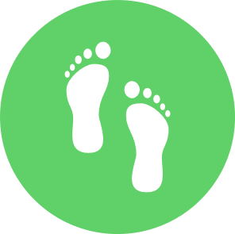

<ion-content>
  <div class="about-info">
    <h3 class="title">Sustieri</h3>

    <p>
     With the help of Sustieri, you will have the opportunity to make your lifestyle more sustainable in order to save our planet.
    </p>
    <p>
      The application gives you motivation and explanations about the steps and challenges that you can take to reduce your ecological footprint.
    </p>
    <p>
      You only have to take three steps:
    </p>
    <ion-list>
      <ion-button routerLink="/app/tabs/ecological-footprint"><h3>Calculate footprint*</h3></ion-button>
      <ion-button routerLink="/app/tabs/daily-challenges/categories"><h3>Find inspiration</h3></ion-button>
      <ion-button routerLink="/app/tabs/daily-challenges"><h3>Set your daily goals</h3></ion-button>
    </ion-list>

    <h3 class="title">*Ecological Footprint</h3>
    <p>The ecological footprint shows how much land we need to produce the natural resources we consume and absorb the waste we produce.</p>
    
    <p>Human well-being is closely connected with the state of nature. Like all living things, human life and well-being depend on the Earth and its resources. On the other hand,  a man destroys the world on which his future and present are based. As a result, the point will soon come when global environmental crises become regular and there is less and less chance that we will be able to slow down the process before it turns into a disaster.</p>
    <p>So one of the most important tasks and challenges of humanity now would be to find a way to mitigate the damage done to the Earth.</p>
  </div>

</ion-content>
